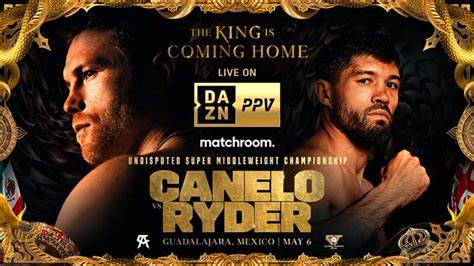
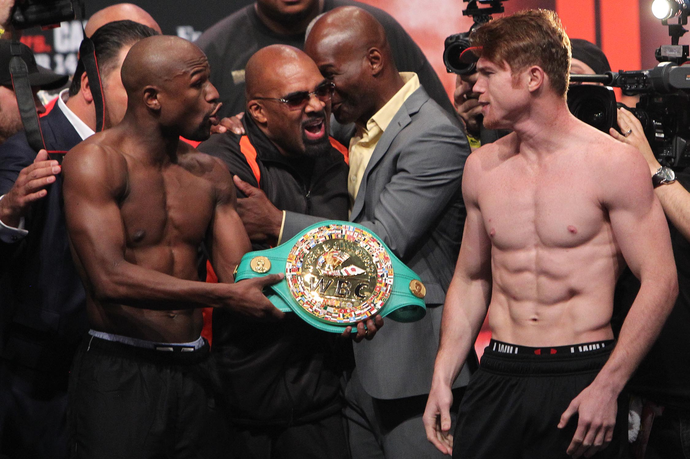
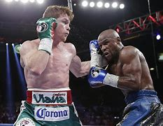

Nació el 18 de julio de 1990 (edad 32 años) nació en Guadalajara, Santos Saul Álvarez Barragán, conocido por su apelativo Canelo Alvares, es un boxeador profesional mexicano, es el actual campeón mundial de la AMB, CMB, OMB, FIB Y The Ring de peso supermediano. También fue campeón de la Asociación Mundial de boxeo, FIB Y The Ring de peso medio, campeón de la AMB, CMB, OMB Y The Ring de peso Superwelter, y campeón de la OMB de peso semicompleto.
Es conocido por ser un gran contragolpeador y uno de los mejores boxeadores defensivos que a dado México. El 15 de septiembre de 2018 derroto al kazajo Gennady Golovkin, ganando así los cinturones del CMB y AMB de peso medio. La pelea de con Golovkin fue nombrada como la mejor pelea de combate del 2018. En 2019 fue elegido como e mejor boxeador del año por la revista The ring y fue nominado al peleador de la década por la asociación de escritores de boxeo de los estados unidos.
Alvarez comenso a boxear a los 13 años de edad despues de presenciar el debut profecional de su hermano mayor Rigoberto Alvares.En 2004 Saul gano la medalla de plata en el campeonata nacional jubenil realizado en sinaloa enfrentando al representante de sinaloa mario abel casares un año despues gano la medalla dorada en la Olimpiada Juvenil de 2005,enfocado en Tuxtla Gutierrez.Canelo cosecho un record amateur de 53 victorias(38 po KO) Y 0 derrotas.
El 29 de octubre de 2005 debuto como profecinal en la Arena de Chololo Larios de Tonala, jalisco, cuando tenia 15 años y 3 meses de edad. Se enfrento a Abraham Gonzalez, y gano por nocaut tecnico en el cuarto episodio.
El 2 de agosto de 2008 obtuvo el titulo welter de la fececentro(Federacion Latinoamericana de Comisiones de Boxeo Profecional),reconocido por la Asociacion mundial de Boxeo(WBA),al vencer a Carlos Adan Juarez.
El 17 de enero de 2009,en el Foro Scotiabank de la ciudad de Mexico, noqueo a Tony<
| resultado | record | rival | metodo | asalto-tiempo | fecha | localizacion | titulo |
| victoria | 58-2-2 | Gennady Golovkin | U.D. | 12 | 17 de septiembre de 2022 | T-Mobile Arena, Las Vegas, Nevada | Retiene WBC, The Ring, WBA (Súper) , WBO y IBF Supermediano. |
| derrota | 57-2-2 | Dmitry Bivol | U.D. | 12 | 7 de mayo de 2022 | T-Mobile Arena, Las Vegas, Nevada | Por WBA (Súper) Semipesado. |
| victoria | 57-1-2 | Caleb Plant | T.K.O. | 11 (12), 0:35 | 6 de noviembre de 2021 | MGM Grand Garden Arena, Las Vegas, Nevada | Defiende WBA (Super), The Ring, WBO y WBC Supermediano. Gana (IBF Supermediano). |
| victoria | 56-1-2 | Billy Joe Saunders | RTD | 8 (12) - 3:00 | 8 de mayo de 2021 | AT&T Stadium, Arlington, Texas | Retiene WBA (Super), The Ring y WBC Supermediano. Gana (WBO Supermediano). |
| victoria | 55-1-2 | Avni Yildirim | RTD | 3 (12) - 3:00 | 27 de febrero de 2021 | Hard Rock Stadium, Miami, Florida | Retiene (WBA (Super), The Ring y WBC Supermediano.) |
| victoria | 54-1-2 | Callum Smith | U.D. | 12 | 19 de diciembre de 2020 | Alamadome, San Antonio, Texas | Gana (WBA (Super), The Ring y WBC Supermediano.) |
| victoria | 53-1-2 | Sergey Kovalev | K.O. | 11 (12) - 2:12 | 2 de noviembre de 2019 | MGM Grand Garden Arena, Las Vegas, Nevada | Gana (WBO Semipesado) |
| victoria | 52-1-2 | Daniel Jacobs | U.D. | 12 | 4 de mayo de 2019 | T-Mobile Arena, Las Vegas, Nevada | Retiene (WBA (Super), WBC, The Ring y Lineal Mediano). Gana (IBF Mediano |
| victoria | 51-1-2 | Rocky Fielding | T.K.O. | 3 (12) - 2:38 | 15 de diciembre de 2018 | Madison Square Garden, Nueva York, Estados Unidos | Gana (WBA (Regular) Supermediano) |
| victoria | 50-1-2 | Gennady Golovkin | M.D. | 12 | 15 de septiembre de 2018 | T-Mobile Arena, Las Vegas, Nevada | Gana (WBA (Super), IBO, WBC y The Ring Mediano). |
| empate | 49-1-2 | Kazajistán Gennady Golovkin | S.D. | 12 | 16 de septiembre de 2017 | T-Mobile Arena, Las Vegas, Nevada | Por (WBA (Super), IBF, IBO y Lineal Mediano). Retiene (The Ring Mediano). |
| victoria | 49-1-1 | Julio César Chávez, Jr. | U.D. | 12 | 6 de mayo de 2017 | T-Mobile Arena, Las Vegas, Nevada | |
| victoria | 48-1-1 | Liam Smith | K.O. | 9 (12) - 2:28 | 9 (12) - 2:28 | AT&T Stadium, Arlington, Texas | Gana (WBO Superwelter). |
| victoria | 47-1-1 | Amir Khan | K.O. | 6 (12) - 0:32 | 7 de mayo de 2016 | T-Mobile Arena, Las Vegas | Retiene (WBC Mediano). |
| victoria | 46-1-1 | Miguel Cotto | U.D. | 12 | 21 de noviembre de 2015 | Mandalay Bay, Las Vegas, Nevada | Gana (WBC y The Ring Mediano). |
| victoria | 45-1-1 | James Kirkland | K.O. | 3 (12) - 2:19 | 9 de mayo de 2015 | 9 de mayo de 2015 | |
| victoria | 44-1-1 | Erislandy Lara | S.D. | 12 | 12 de julio de 2014 | MGM Grand Garden Arena, Las Vegas, Nevada | |
| victoria | 43-1-1 | Alfredo Angulo | T.K.O. | 10 (12) - 0:47 | 8 de marzo de 2014 | MGM Grand Garden Arena, Las Vegas, Nevada | |
| derrota | 42-1-1 | Floyd Mayweather, Jr. | M.D. | 12 | 14 de septiembre de 2013 | Grand Garden Arena, Las Vegas, Nevada | Pierde (WBC y The Ring Superwelte |
| victoria | 42-0-1 | Austin Trout | U.D | 12 | 20 de abril de 2013 | Alamodome, San Antonio, Texas | Retiene (WBC Superwélter). Gana (WBA (regular) y The Ring Superwélter). |
| victoria | 41-0-1 | Josesito López | T.K.O. | 5 (12) - 2:55 | 15 de septiembre de 2012 | MGM Grand Garden Arena, Las Vegas, Nevada | Retiene (WBC superwélter). |
| victoria | 40-0-1 | Shane Mosley | U.D | 12 | 5 de mayo de 2012 | MGM Grand Garden Arena, Las Vegas, Nevada | Retiene (WBC superwélter). |
| victoria | 39-0-1 | Kermit Cintrón | T.K.O. | 5 (12) - 2:53 | 26 de noviembre de 2011 | Monumental Plaza de toros México, México, D. F. | Retiene (WBC Superwélter). |
| victoria | 38-0-1 | Alfonso Gómez | T.K.O. | 6 (12) - 0:25 | 18 de septiembre de 2011 | Staples Center, Los Ángeles, California | Retiene (WBC Superwélter). |
| victoria | 37-0-1 | Ryan Rhodes | T.K.O. | 12 (12) - 0:48 | 18 de junio de 2011 | Arena VFG, Guadalajara, Jalisco | Retiene (WBC Superwélter). |
| victoria | 36-0-1 | Matthew Hatton | U.D. | 12 | 5 de marzo de 2011 | Honda Center, Anaheim, California | Gana (WBC Superwélter). |
| victoria | 35-0-1 | Lovemore N'dou | U.D. | 12 | 4 de diciembre de 2010 | Parque Deportivo Universitario "Beto Ávila", Veracruz | Retiene (WBC (plata) Superwélter). |
| victoria | 34-0-1 | Carlos Baldomir | K.O. | 6 (10) - 2:58 | 18 de septiembre de 2010 | Staples Center, Los Ángeles, California | Retiene (WBC en el Superwélter). |
| victoria | 33-0-1 | Luciano Cuello | T.K.O. | 6 (12) - 1:23 | 10 de julio de 2010 | Arena VFG, Guadalajara, Jalisco | Gana (WBC en el Superwélter). |
| victoria | 32-0-1 | José Miguel Cotto | T.K.O. | 9 (10) - 2:51 | 1 de mayo de 2010 | MGM Grand Las Vegas, Las Vegas, Nevada | Retiene (NABF Superwélter). |
| victoria | 31-0-1 | Brian Camechis | T.K.O. | 3 (12) - 0:23 | 6 de marzo de 2010 | Palenque de la Feria, Tuxtla Gutiérrez, Chiapas | Retiene (NABF Superwélter). |
| victoria | 30-0-1 | Lanardo Tyner | U.D. | 12 | 5 de diciembre de 2009 | Tepic, Nayarit | Retiene (NABF Superwélter). |
| victoria | 29-0-1 | Carlos Herrera | T.K.O. | 1 (10) - 2:46 | 15 de septiembre de 2009 | Auditorio Siglo XXI, Puebla, Puebla | Retiene (WBC (juvenil) Wélter). |
| victoria | 28-0-1 | Marat Khuzeev | K.O. | 2 (10) - 2:33 | 8 de agosto de 2009 | Auditorio Benito Juárez, Zapopan, Jalisco | Gana (WBC (juvenil) Wélter). |
| victoria | 27-0-1 | Jefferson Luís Gonçalo | K.O. | 9 (12) - 1:54 | 6 de junio de 2009 | Parque Xcaret, Cancún, Quintana Roo | Retiene (NABF Wélter). |
| victoria | 26-0-1 | Michel Rosales | T.K.O. | 10 (12) - 2:53 | 11 de abril de 2009Parque Xcaret, Cancún, Quintana Roo | Retiene (NABF Wélter). | |
| victoria | 25-0-1 | Euri González | T.K.O. | 11 (12) - 1:36 | 21 de febrero de 2009 | Auditorio Benito Juárez, Zapopan, Jalisco | Retiene (NABF y WBO (latino) Wélter). |
| victoria | 24-0-1 | Antonio Fitch | T.K.O. | 1 (12) - 1:52 | 17 de enero de 2009 | Foro Scotiabank, Polanco, México, D. F. | Gana (NABF y WBO (latino) Wélter). |
| victoria | 23-0-1 | Raúl Pinzón | T.K.O. | 1 (12) - 2:30 | 5 de diciembre de 2008 | Miccosukee Indian Gaming Resort, Miami, Florida | Retiene (WBA (Fedecentro) Wélter). |
| victoria | 22-0-1 | Larry Mosley | U.D. | 10 | 24 de octubre de 2008 | Morongo Casino Resort & Spa, Cabazon, California | |
| victoria | 21-0-1 | Carlos Adán Jerez | U.D. | 10 | 2 de agosto de 2008 | Auditorio Benito Juárez, Zapopan, Jalisco | Retiene (WBA (Fedecentro) Wélter). |
| victoria | 20-0-1 | Miguel Vázquez | Miguel Vázquez | 10 | 6 de junio de 2008 | Tepic, Nayarit | |
| victoria | 18-0-1 | Gabriel Martínez | R.T.D | 10 (12) - 0:10 | 14 de abril de 2008 | Salón Marbet Plus, Ciudad Nezahualcóyotl, México, D. F. | Gana (WBA (Fedecentro) Wélter). |
| victoria | 17-0-1 | Francisco Villanueva | R.T.D | 9 (12) - 2:32 | 14 de marzo de 2008 | Coliseo Olímpico de la UG, Guadalajara, Jalisco | Retiene (Jalisco Wélter). |
| victoria | 16-0-1 | Axel Rodrigo Solís | K.O. | 1 (8) | 22 de febrero de 2008 | Salón Marbet Plus, Ciudad Nezahualcóyotl, México, D. F. | |
| victoria | 15-0-1 | Sean Holley | T.K.O. | 2 (10) | 15 de diciembre de 2007 | Auditorio Benito Juárez, Guadalajara, Jalisco | |
| victoria | 14-0-1 | Ricardo Cano | U.D. | 12 | 31 de agosto de 2007 | Coliseo Olímpico, Guadalajara, Jalisco | Gana (Jalisco Wélter) |
| victoria | 13-0-1 | Christian Solano | U.D. | 10 | 18 de agosto de 2007 | 18 de agosto de 2007 | |
| victoria | 12-0-1 | Jesús Abel Hernández | T.K.O. | 2 (10) | 1 de junio de 2007 | Casino de los Fresnos, Tepic, Nayarit | |
| victoria | 11-0-1 | Víctor Márquez | K.O. | 4 (10) - 1:48 | 19 de mayo de 2007 | Auditorio Benito Juárez, Guadalajara, Jalisco | |
| victoria | 10-0-1 | Iván Illescas | K.O. | 4 (10) - 2:40 | 30 de marzo de 2007 | Arena-Casino Los Fresnos, Tepic, Nayarit | |
| victoria | 9-0-1 | Javier Martínez | T.K.O. | 8 (10) | 8 (10) | Casino Los Fresnos, Tepic, Nayarit | |
| victoria | 8-0-1 | Daniel Martínez | K.O. | 2 (8) | 8 de diciembre de 2006 | 8 de diciembre de 2006 | |
| victoria | 7-0-1 | Francisco Villanueva | K.O. | 5 (6) - 1:20 | 29 de septiembre de 2006 | Arena Chololo Larios, Tonalá, Jalisco | |
| victoria | 6-0-1 | Cristian Hernández | K.O. | 2 (6) | 15 de septiembre de 2006 | Guadalajara, Jalisco | |
| victoria | 5-0-1 | Juan Hernández | K.O. | 2 (6) | 21 de julio de 2006 | Arena Coliseo, Guadalajara, Jalisco | |
| Empate | 4-0-1 | Jorge Juárez | S.D. | 4 | 17 de junio de 2006 | Auditorio Municipal, Tijuana, Baja California | |
| victoria | 4-0 | Pedro López | K.O. | 1 (4) | 10 de febrero de 2006 | Men´s Club, Guadalajara, Jalisco | |
| victoria | 3-0 | Miguel Vázquez | S.D. | 4 | 20 de enero de 2006 | Guadalajara, Jalisco | |
| victoria | 2-0 | Pablo Alvarado | K.O. | 2 (4) - 2:25 | 26 de noviembre de 2005 | Arena Chololo Larios, Tonalá, Jalisco | victoria | 1-0 | Abraham González | T.K.O. | T.K.O. | 29 de octubre de 2005 | Arena Chololo Larios, Tonalá, Jalisco |
Álvarez vs Hatton: Primera corona mundial El 5 de marzo de 2011, Álvarez derrotó a Matthew Hatton por decisión unánime, para agenciarse el vacante cinturón de peso superwélter de WBC. La pelea fue transmitida por HBO y se llevó a cabo en Honda Center en Anaheim, California. Saúl fue sancionado con reducción de un punto en el séptimo asalto, por golpear después del la indicación del referí. Los tres jueces anotaron puntuaciones de 119-108 en favor de Álvarez. Saúl conectó 47% de los 626 golpes que lanzó, incluyendo 53% de sus golpes de poder, mientras que Hatton tuvo efectividad del 25 %, de los 546 golpes lanzados.
20 años y 6 meses de edad, Álvarez entró a la lista de los 10 mexicanos más jóvenes en coronarse campeones mundiales.
arez vs Gómez El 18 de septiembre del 2011 se enfrenta al pugilista Alfonso Gómez, quien, previo a la pelea semanas antes, le compone un «freestyle» de hip hop en una conferencia de prensa, mencionándole de su supuesta estafa con Golden Boy Promotions y Televisa, recalcándole que el cinturón superwélter del WBC se lo «regalaron». La pelea se efectuó en la fecha acordada y la superioridad de Álvarez fue notoria, así también el poder de manos. Gómez fue derrotado en el sexto episodio a los 25 segundos (0:25) por KO técnico. Al finalizar la contienda Alfonso Gómez reconoció la superioridad física y de habilidad del llamado «Canelo».
arez vs Mosley El 5 de mayo de 2012 defendió su corona de peso superwélter del WBC contra el estadounidense Shane Mosley, a quien derrotó, reteniendo el título por decisión unánime. La notable diferencia de edad (22 años del Canelo y 41 de Mosley) fue clara: en los primeros rounds Mosley tiraba jabs a la cara los cuales le entraron al rostro de Canelo. En los últimos rounds Mosley solo tiró jabs al guante ganando
arez vs Trout Su siguiente pelea tomó lugar el 20 de abril de 2013 en el Alamodome en San Antonio, Texas. La pelea estaba prevista para el fin de semana del Cinco de Mayo como combate de respaldo para la contienda principal entre Floyd Mayweather Jr. y Robert Guerrero; sin embargo, debido al desacuerdo entre Álvarez y Mayweather respecto a su potencial enfrentamiento en septiembre, Álvarez optó por protagonizar la pelea estelar en su propia cartelera. Durante los primeros asaltos, Austin Trout parecía tener un buen plan de pelea. Sin embargo, el poder de Álvarez se impuso a partir del tercer asalto; finalmente Saúl logró derribar a Trout, quien cayó al tapiz por primera vez en su carrera. Álvarez mandó a la lona a Trout con un potente jab de izquierda, seguido de un fuerte cruzado de derecha. La pelea fue más cerrada de lo esperado, pero Álvarez mantuvo su dominio sobre Trout con buenos movimientos de cabeza y potente golpeo. Las tarjetas de los tres jueces dieron el triunfo a Álvarez por un margen justo (115-112, 116-111 y 118-109). A pesar de que la tarjeta de 118-109 generó controversia, la mayoría de los analistas deportivos coincidieron en que Álvarez ganó por al menos 2 puntos. Saúl defendió exitosamente su título superwélter del WBC y ganó la corona mundial superwélter de la WBA y el cinturón vacante de la revista The Ring. Inmediatamente después del encuentro, Trout declaró que nunca subestimó a Álvarez, pero que él había entrenado para enfrentar a un peleador completamente diferente.
arez vs Mayweather Artículo principal: Floyd Mayweather Jr. vs. Saúl Álvarez El 14 de septiembre de 2013, Canelo Álvarez fue derrotado por el invicto Floyd Mayweather Jr., en combate pactado en 152 libras por petición del norteamericano, quien originalmente había sugerido un límite de 150 libras. Floyd superó durante los doce rounds gracias a su velocidad, su juego de piernas y su jab izquierdo, a un Saúl Álvarez que lució más cansado de lo normal por el corte de peso al que fue sometido. El combate había sido anunciado hacía tiempo y bastante vendido, como uno de los mejores del año. Las expectativas de Canelo, que venía con una impresionante carrera ascendente con un 42-0-1 (30 KO), eran muy grandes. El mexicano de tan solo 23 años quería sorprender al mundo y derrotar al veterano e invicto Mayweather Jr. Esta fue la primera derrota en la carrera del peleador.
 
La exitosa carrera de Saúl 'Canelo' Álvarez tal vez no lo sería del todo si antes no hubiera tropezado en sus inicios. Y es que, fue justo cuando comenzaba a despegar y a instalarse en los reflectores mundiales que le llegó su primera derrota, la cual, a pesar de causarle dolorosas lágrimas, le dejó las enseñanzas necesarias que ahora lo tienen como uno de los mejores boxeadores.
¿En qué fecha fue la pelea de Canelo vs Mayweather?
La derrota del pugilista tapatío se dio ante el legendario gladiador estadounidense, Floyd Mayweather Jr., quien se impuso con claridad al mexicano la noche del 14 de septiembre del 2013. En ese combate, el papel protagonista lo llevó el autodenominado 'Money', tal como hizo durante toda su exitosa carrera, la cual, por cierto, hay que recordar que terminó invicta.
Aquella velada boxística tan esperada por el mundo entero fue llamada 'The One' y se llevó a cabo ante entradas agotadas por los miles que acudieron al icónico MGM Grand Garden Arena, dentro de las instalaciones del MGM Grand Hotel & Casino, ubicado en Las Vegas, Nevada, Estados Unidos. Resumen el combate entre Canelo y Mayweather Con el aval de Showtime, Mayweather Jr., en ese entonces de 36 años de edad, se llevó una bolsa de más de 40 millones de dólares al vencer al entonces joven Canelo, de apenas 23 años de edad. La pelea se desarrolló en la división del Peso Superwelter y tuvo un solo lado, con el estadounidense controlando las acciones, ante el ímpetu del de Guadalajara, quien no lograba atinar algún golpe que lo llevara a ponerlo en predicamentos.